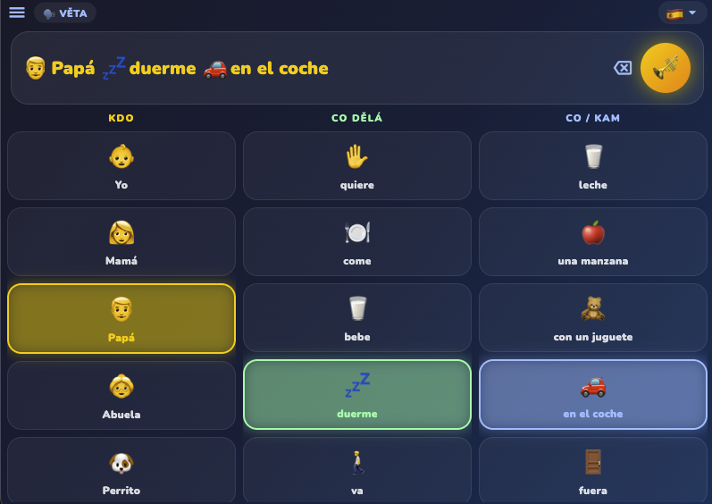
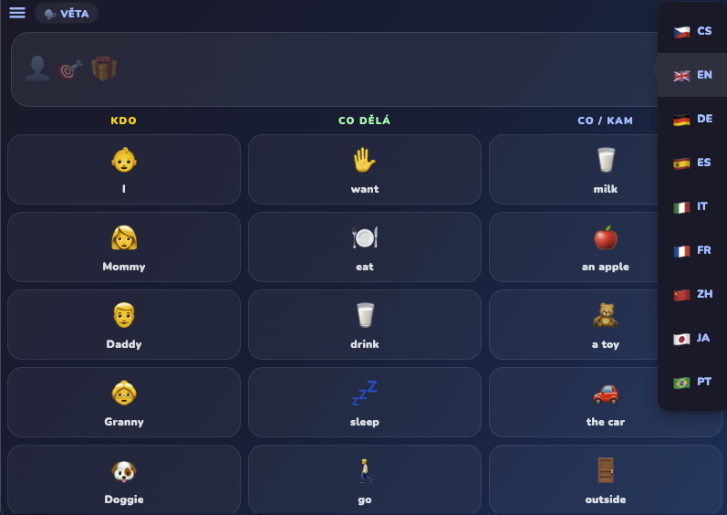
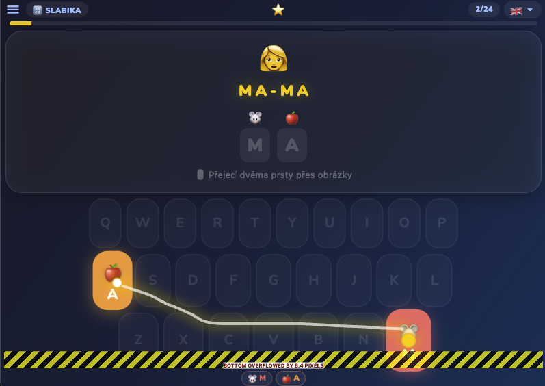
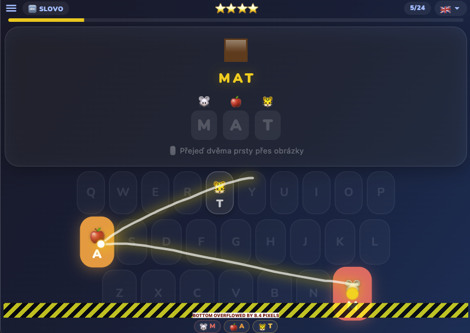

SwypeKids
Výuková hra pro děti – učíme se písmenka swyp tahem
macOSWindowsLinuxMobil
Ke stažení
Screenshoty — desktop




Screenshoty — mobil
Zatím bez screenshotů (mobile).
Popis
SwypeKids je výuková hra pro děti, ve které se učí písmenka tahem (swype) po klávesnici. Jednoduché, barevné a hravé prostředí navržené pro nejmenší.
Postaveno ve Flutteru.